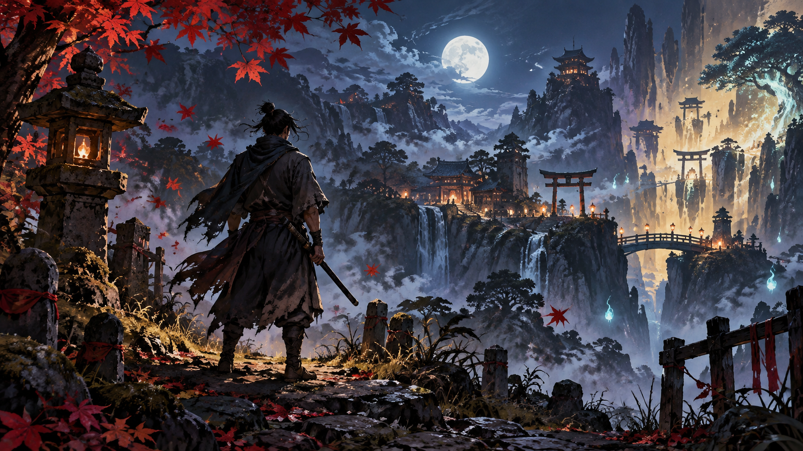

news · Preservation
Muramasa: Revenant Blades Launches February 4
Vanillaware's Muramasa returns on February 4, 2027, combining the Vita release and Genroku Legends for modern consoles and Steam.

What happened
Marvelous and developer Vanillaware announced on September 10, 2026 that Muramasa: Revenant Blades will launch on February 4, 2027 for PlayStation 5, Nintendo Switch 2, Nintendo Switch, and PC via Steam. The official site lists all four platforms, while Marvelous' PlayStation Blog post confirms the date and describes the release as a remastered action RPG.
The package combines Muramasa: Rebirth with its Genroku Legends add-on for the first time, bringing together six playable protagonists and their separate stories. Confirmed additions include a new English voice-over, revised combat and progression features, a gallery, character viewer, event replay tools, and a classic mode based on the PlayStation Vita versions of the main game and Genroku Legends.
Why it matters
Muramasa's most complete prior release was built around the discontinued PlayStation Vita, while the original Muramasa: The Demon Blade appeared on Wii. Revenant Blades moves that combined content to hardware players can buy today and preserves a version of the earlier gameplay inside the new release instead of replacing it outright.
The official site advertises 4K presentation on supported platforms, not on every listed system. It does not yet provide a frame-rate target or a platform-by-platform resolution breakdown, so the confirmed value is broader access and a consolidated edition—not identical technical performance everywhere.
The Arcade World take
Including both the renewed game and a classic mode is the most meaningful part of this announcement. Remasters often force players to accept mechanical revisions as the only available version; keeping the Vita-era experience accessible gives returning players a comparison point and makes the release more useful for preservation.
Gematsu reports North American physical prices of $49.99 for PS5 and Switch, and $59.99 for Switch 2, with the full game on the Switch 2 card. That is independently reported detail rather than information displayed on the current official game page, so buyers should verify the exact edition, region, retailer terms, and cartridge contents before paying.
What happens next
Wishlists and physical preorders are opening through platform stores and regional retailers. Marvelous says digital-edition details are still to come, leaving digital prices and any edition differences unconfirmed for now.
The useful next update will be a technical comparison covering frame rate, resolution, load times, handheld behavior, and any download requirement by platform. Until Marvelous publishes those details, players should choose based on where they want to play and avoid treating the 4K claim as universal.
Sources and further reading
Keep exploring
Open the Game Room or visit the latest stories.